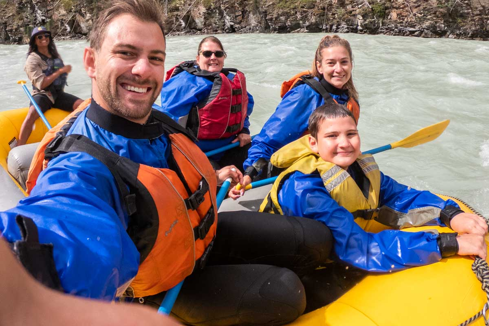
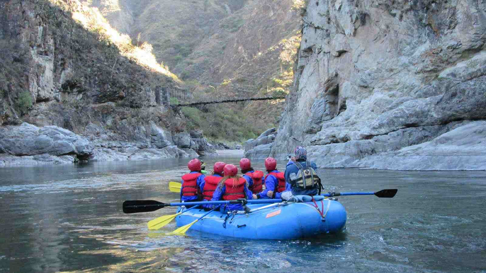
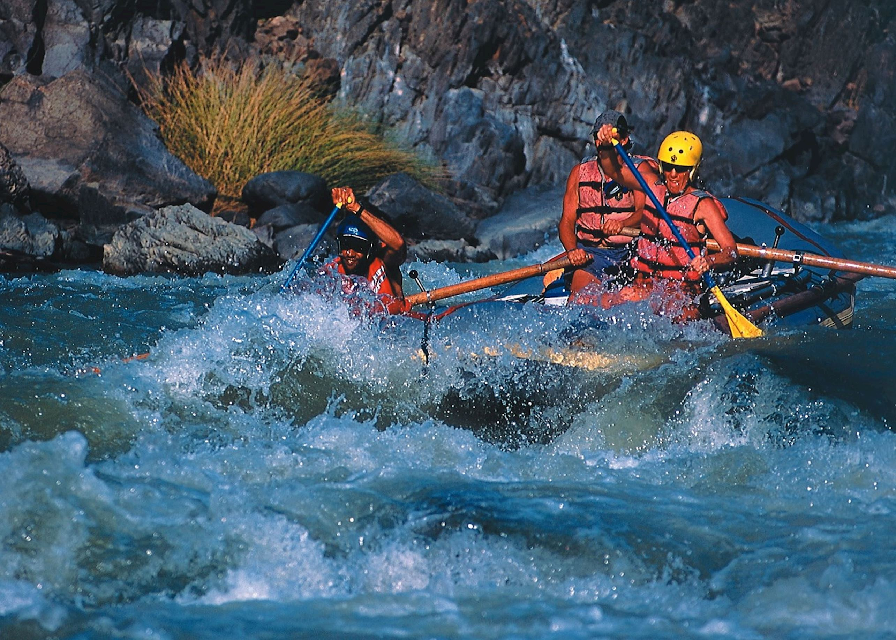
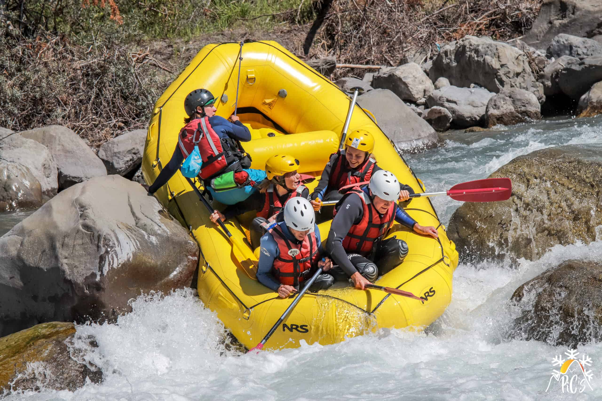

Experience the thrill of navigating the rivers of Peru.

Experience the thrill of navigating the rivers of Peru.
Rafting in Peru has a rich history dating back to ancient civilizations. It has become a popular adventure sport, attracting thrill-seekers from around the globe.

Peru offers some of the most breathtaking rivers, and each trip is a unique experience, making it a prime destination for rafting enthusiasts.


